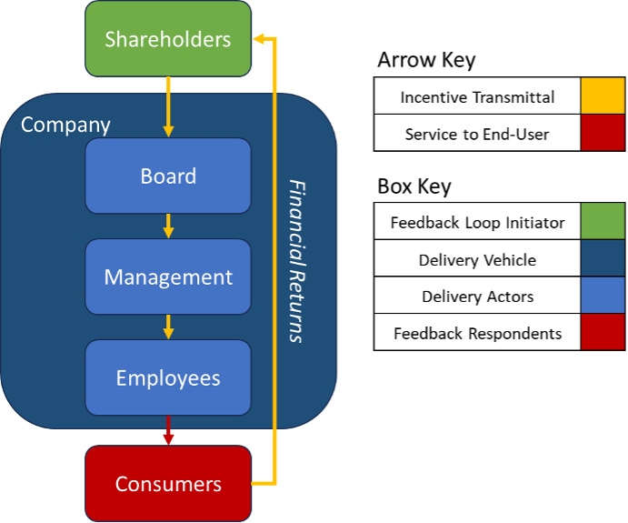

Part 2: Financial Feedback Loops
Introduction
In part 2 of the Incentives series, we will be looking at financial feedback loops as a system of incentive mechanisms. We will first explain what financial feedback loops are and how they operate in competitive private markets, before then looking at why they do not transfer very well to the public sector. We are not trying to establish that all publicly administered functions and services must be privatised to be efficient, as financial feedback loops aren’t the only incentive mechanisms able to drive efficiency. The comparison between public and private is useful to elucidate the unique difficulties public delivery faces and will enable us to think clearly about other incentive mechanisms in part 3 of this series.
Financial Feedback Loops
The allocation of private capital largely rests on quantifiable metrics of return. Private capital is deployed according to the expected level and variability of return offered. Of course, investors can and do get this wrong all the time – but the key point is that they suffer when they get things wrong and benefit when they get things right. Importantly, they also know the difference – success and failure are quantifiable in terms of return and risk. Investors benefit from a relatively unambiguous feedback loop that is quantitative in nature.
There is a very broad feedback rule that operates alongside private capital. Private capital is made available to an enterprise on the expectation of some return, and the level of return required will be commensurate with the level of risk involved with the enterprise. Investors will only provide capital if they perceive there to be a credible likelihood of a return on their capital, and investors will seek to withdraw their capital if they believe that future returns are insufficient for the level of risk involved. In the medium to long run, enterprises that do not offer sufficient returns at acceptable levels of risk will cease to exist – and there is constant turnover and changing allocations of capital as enterprises form, persist and disappear according to their ability to generate returns.
One might plausibly ask, how does this risk and return feedback loop lead to productive uses of funds to solve real world problems and do useful things? The answer is that returns are not random, although they may be difficult to predict. For any given market, any serviceable want or need, success in the form of returns is driven by an enterprise’s ability to meet that want or need – and in a superior way, or at least not clearly inferior way, to its competitors. Consumers, the people or entities who have the want or need to be addressed, vote with their feet by purchasing the product that best meets their needs at a price point acceptable to them. Enterprises compete for the revealed preferences of their consumers and this competition drives the enterprise to deliver better quality products at lower cost, to be able to compete on quality and price according to consumer preferences.
The risk and return feedback loop is not restricted to just selecting for the most efficient enterprises producing a product to address a want or need – it also operates to help select for how wants and needs are addressed and operates within enterprises to improve performance. Below, we will look at 3 examples to elucidate the feedback loop at these different levels:
Determining how to address the need
Take the market for home video entertainment. People want to watch films and tv shows on-demand at home, and this demand was met through a market for rentals of VHS tapes and latterly DVDs. Physical media rental enterprises, such as Blockbuster, competed more broadly with other forms of home entertainment (e.g. television and radio), but succeeded in their own segment of on demand home video. The advent of mail-in home media rental services and then subsequently online streaming offered a better value home media rental solution for consumers. This led to lower and ultimately non-viable returns for physical media rental enterprises, and the preferred method of addressing the on-demand home video entertainment demand is now almost exclusively online streaming. Ultimately, the move to online streaming is due to a multitude of factors, including price, convenience, a better user experience and the widespread adoption of new technology. All these factors are transmitted via a feedback loop of returns for market participants which prompt the overall switch to online streaming provision. No top-level industry committee is required to convene and weigh the pros and cons of physical rental vs online streaming. Millions of individual choices and signals combine with the broader capital incentives to produce a more efficient way of meeting on-demand home video needs.
There are hundreds of examples to choose from where the risk and return feedback loop transmits information to enable more productive uses of capital, funding the right kind of solution to address consumer wants and needs. From determining what forms of transport we use, to how we communicate over long distances. The feedback loop can combine qualitative information about quality, consumer preferences and efficiency into unambiguous and comparable quantitative data in the form of returns and risk – to ensure that the right kind of solutions are funded and the inefficient, undesired or outdated solutions left to the wayside.
Selecting the entity to address the need
The risk and return feedback loop does not just help discriminate on how market needs are met in general forms, but which entities are best able to meet them. Take the market for private transport and more specifically cars. Cars are an established method of meeting the need to get from A to B – and address the specific segment within that need of getting there on demand and privately. There is an ongoing feedback loop determining whether cars continue to meet this need and meet it better than alternatives – but there is are also ongoing feedback loops within the market for cars with constantly evolving market shares for the entities competing within this space.
Volkswagen, Toyota, Ford and Hyundai all try to produce the kind of cars that attract demand at a sufficient price point to make an adequate return for their investors. If an upstart car company were to emerge which was able to produce cars of better quality at half the cost, then the other companies would have to quickly follow suit, find a way to sufficiently differentiate their product, or ultimately exit the market. Although any individual entity can go out of business, the risk and return feedback loop ensures that the entities that continue to operate in the industry operate at or close to the frontier of efficiency – and that capital deployed in unproductive entities is redeployed to a more productive use.
Management of the entity
The providers of capital, especially in the form of equity, will often have a say on the management of the entities that they invest in. Management participates in a feedback loop with investors whereby they are punished or rewarded for the choices that they make in deploying the capital made available to them. A business’ strategic decisions, operational efficiency and ability to please their customers are all measured by their return on investment. If a business cannot make an acceptable return on the funds made available to it, then either the management will be replaced or the business will cease to exist if investors withdraw their funds to deploy elsewhere.
Take the example of IBM in the 1990s. IBM had been in the personal computer hardware market, however, by the early 90’s IBM was struggling to compete with lower-cost PC manufacturers in a growing market. IBM made a loss of $8bn in 1993. IBM’s board decided to change management in 1993 and appoint a new CEO, Lou Gerstner. IBM subsequently pivoted to focus less on hardware and more on services and software – and subsequently returned to profitability. The unambiguous feedback delivered in financial returns provides a clear signal to investors that a change of business management and/or direction is needed, and allows capital to be redeployed to more productive uses by making these changes.
Public Sector Applicability
Financial feedback loops in the public sector
Within the financial feedback loop there are two key participants at either end of the chain:
- The Feedback Loop Initiator: in this case the shareholder who, through their investment, sets in motion productive activity to service a want or need. The shareholder is incentivised by financial returns.
- The Feedback Respondent: in this case the consumers, who provide feedback on the good or service being offered through their spending decisions. For this feedback to be legible it requires that consumers have choices and trade-offs to manage, which reveal preferences amongst different types of goods and services – these trade-off decisions are possible due to finite disposable income and prices.
In the middle of this loop is the vehicle through which the shareholder directs their capital to serve consumers wants and needs, and through which consumers communicate their preferences to shareholders – the company.
There are a few key features that make the above feedback loop possible, which are not always present in the public sector:
- Returns to Capital: both returns to capital as a goal, and as a feasible outcome are often absent in the public sector. Where the deployment of capital is not motivated by financial return, it tends to be: less receptive to the feedback of consumers’ revealed preferences, less sensitive to inefficient management and operations of the delivering entities, and ultimately less liable to capital flight from unproductive use.
- Prices: demand at different price levels serves as a signal to capital to communicate relative need and scarcity. Prices also force consumers to make trade-offs and value for money decisions, which reveals a hierarchy of value and enables limited capital to be deployed more efficiently. Prices are often not present in the public sector. Where prices do exist, they are often set by central authorities rather than discovered, and/or exist in monopolised markets where pricing competition is absent.
Whilst privatisation may be appropriate for some industries, the privatisation of all publicly provided goods and services will not necessarily lead to functioning financial feedback loops. In many cases, the case for public provision is due to consumers inability to act as feedback respondents in the feedback loop. For example, in natural monopolies the provider of a good or services is shielded from competition and demand is often inelastic to both price and quality, preventing any sort of feedback from consumers to capital. In other cases, there is no incentive for private capital to fund certain needs and want. Textbook “tragedy of the commons” or “free rider” cases are such examples.
Summary: Financial Feedback Loops
git statIn the private sector there are unambiguous feedback loops in the guise of quantifiable metrics of financial risk and return, a.k.a. financial feedback loops. These financial feedback loops help inform decisions on both the kind of things to fund, and what entities to provide funds to. They also provide feedback to the management of those entities on their success or failure. Financial feedback loops incentivise capital deployed to unproductive or suboptimal uses to be reallocated to more productive uses over time, as quantifiable metrics of risk and return inform capital and management of relative success and failure. Financial feedback loops are limited or do not exist in the public sector as pricing mechanisms, competition and/or profit seeking incentives are not available.